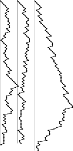
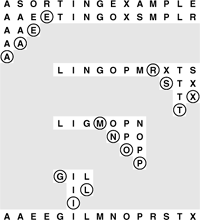
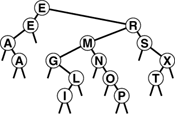

C++ Programming Robert Sedgewick - Princeton University Addison Wesley Professional Algorithms in C++, Parts 1–4: Fundamentals, Data Structure, Sorting, Searching, Third Edition
7.3. Stack Size
As we did in Chapter 3, we can use an explicit pushdown stack for quicksort, thinking of the stack as containing work to be done in the form of subfiles to be sorted. Any time that we need a subfile to process, we pop the stack. When we partition, we create two subfiles to be processed and push both on the stack. In the recursive implementation in Program 7.1, the stack maintained by the system holds this same information.
For a random file, the maximum size of the stack is proportional to log N (see reference section), but the stack can grow to size proportional to N for a degenerate case, as illustrated in Figure 7.5. Indeed, the very worst case is when the input file is already sorted. The potential for stack growth proportional to the size of the original file is a subtle but real difficulty with a recursive implementation of quicksort: There is always an underlying stack, and a degenerate case on a large file could cause the program to terminate abnormally because of lack of memory—behavior obviously undesirable for a library sorting routine. (Actually, we likely would run out of time before running out of space.) It is difficult to provide a guarantee against this behavior, but we shall see in Section 7.5 that it is not difficult to provide safeguards that make such degenerate cases extremely unlikely to occur.
The recursive stack for quicksort does not grow large for random files, but can take excessive space for degenerate files. The stack sizes for two random files (left, center) and that for a partially ordered file (right) are plotted here.

Program 7.3 is a nonrecursive implementation that addresses this problem by checking the sizes of the two subfiles and putting the larger of the two on the stack first. Figure 7.6 illustrates this policy. Comparing this example with Figure 7.1, we see that the subfiles are not changed by this policy; only the order in which they are processed is changed. Thus, we save on space costs without affecting time costs.
The order in which the subfiles are processed does not affect the correct operation of the quicksort algorithm, or the time taken, but might affect the size of the pushdown stack underlying the recursive structure. Here the smaller of the two subfiles is processed first after each partition.

The policy of putting the larger of the small subfiles on the stack ensures that each entry on the stack is no more than one-half of the size of the one below it, so that the stack needs to contain room for only about lg N entries. This maximum stack usage occurs when the partition always falls at the center of the file. For random files, the actual maximum stack size is much lower; for degenerate files it is likely to be small.
Program 7.3. Nonrecursive quicksort|
This nonrecursive implementation (see Chapter 5) of quicksort uses an explicit pushdown stack, replacing recursive calls with stack pushes (of the parameters) and the procedure call/exit with a loop that pops parameters from the stack and processes them as long as the stack is nonempty. We put the larger of the two subfiles on the stack first to ensure that the maximum stack depth for sorting N elements is lg N (see Property 7.3).
#include "STACK.cxx"
inline void push2(STACK<int> &s, int A, int B)
{ s.push(B); s.push(A); }
template <class Item>
void quicksort(Item a[], int l, int r)
{ STACK<int> s(50);
push2(s, l, r);
while (!s.empty())
{
l = s.pop(); r = s.pop();
if (r <= l) continue;
int i = partition(a, l, r);
if (i-l > r-i)
{ push2(s, l, i-1); push2(s, i+1, r); }
else
{ push2(s, i+1, r); push2(s, l, i-1); }
}
}
|
Property 7.3. If the smaller of the two subfiles is sorted first, then the stack never has more than lg N entries when quicksort is used to sort N elements|
The worst-case stack size must be less than TN,where TN satisfies the recurrence TN = T N/2 N/2 + 1 with T1 = T0 = 0. This recurrence is a standard one of the type considered in Chapter 5 (see Exercise 7.13). + 1 with T1 = T0 = 0. This recurrence is a standard one of the type considered in Chapter 5 (see Exercise 7.13).
|
This technique does not necessarily work in a truly recursive implementation, because it depends on end- or tail-recursion removal. If the last action of a procedure is to call another procedure, some programming environments will arrange things such that local variables are cleared from the stack before, rather than after, the call. Without end-recursion removal, we cannot guarantee that the stack size will be small for quicksort. For example, a call to quicksort for a file of size N that is already sorted will result in a recursive call to such a file of size N - 1, in turn resulting in a recursive call for such a file of size N - 2 , and so on, ultimately resulting in a stack depth proportional to N. This observation would seem to suggest using a nonrecursive implementation to guard against excessive stack growth. On the other hand, some C++ compilers automatically remove end recursion, and many machines have direct hardware support for function calls—the nonrecursive implementation in Program 7.3 might therefore actually be slower than the recursive implementation in Program 7.1 in such environments.
Figure 7.7 further illustrates the point that the nonrecursive method processes the same subfiles (in a different order) as does the recursive method for any file. It shows a tree structure with the partitioning element at the root and the trees corresponding to the left and right subfiles as left and right children, respectively. Using the recursive implementation of quicksort corresponds to visiting the nodes of this tree in preorder; the nonrecursive implementation corresponds to a visit-the-smaller-subtree-first traversal rule.
If we collapse the partitioning diagrams in Figures 7.1 and 7.6 by connecting each partitioning element to the partitioning element used in its two subfiles, we get this static representation of the partitioning process (in both cases). In this binary tree, each subfile is represented by its partitioning element (or by itself, if it is of size 1), and the subtrees of each node are the trees representing the subfiles after partitioning. For clarity, null subfiles are not shown here, although our recursive versions of the algorithm do make recursive calls with r < l when the partitioning element is the smallest or largest element in the file. The tree itself does not depend on the order in which the subfiles are partitioned. Our recursive implementation of quicksort corresponds to visiting the nodes of this tree in preorder; our nonrecursive implementation corresponds to a visit-the-smaller-subtree-first rule.

When we use an explicit stack, as we did in Program 7.3, we avoid some of the overhead implicit in a recursive implementation, although modern programming systems do not incur much overhead for such simple programs. Program 7.3 can be further improved. For example, it puts both subfiles on the stack, only to have the top one immediately popped off; we could change it to set the variables l and r directly. Also, the test for r <= l is done as subfiles come off the stack, whereas it would be more efficient never to put such subfiles on the stack (see Exercise 7.14). This case might seem insignificant, but the recursive nature of quicksort actually ensures that a large fraction of the subfiles during the course of the sort are of size 0 or 1. Next, we examine an important improvement to quicksort that gains efficiency by expanding upon this idea, handling all small subfiles in as efficient a manner as possible.
Exercises |  7.11 Give, in the style of Figure 5.5, the stack contents after each pair of push and pop operations, when Program 7.3 is used to sort a file with the keys E A S Y Q U E S T I O N. 7.11 Give, in the style of Figure 5.5, the stack contents after each pair of push and pop operations, when Program 7.3 is used to sort a file with the keys E A S Y Q U E S T I O N.
| | 7.12 Answer Exercise 7.11 for the case where we always push the right subfile, then the left subfile (as is the case in the recursive implementation). | | 7.13 Complete the proof of Property 7.3, by induction. | | 7.14 Revise Program 7.3 such that it never puts on the stack subfiles with r <= l. | | 7.15 Give the maximum stack size required by Program 7.3 when N = 2n. | | 7.16 Give the maximum stack sizes required by Program 7.3 when N = 2n - 1 and N = 2n + 1. | |  7.17 Would it be reasonable to use a queue instead of a stack for a nonrecursive implementation of quicksort? Explain your answer. 7.17 Would it be reasonable to use a queue instead of a stack for a nonrecursive implementation of quicksort? Explain your answer.
| | 7.18 Determine and report whether your programming environment implements end-recursion removal. | |  7.19 Run empirical studies to determine the average stack size used by the basic recursive quicksort algorithm for random files of N elements, for N = 103, 104, 105, and 106. 7.19 Run empirical studies to determine the average stack size used by the basic recursive quicksort algorithm for random files of N elements, for N = 103, 104, 105, and 106.
| | 7.20 Find the average number of subfiles of size 0, 1, and 2 when quicksort is used to sort a random file of N elements. |
|